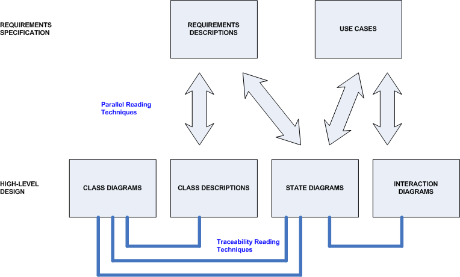
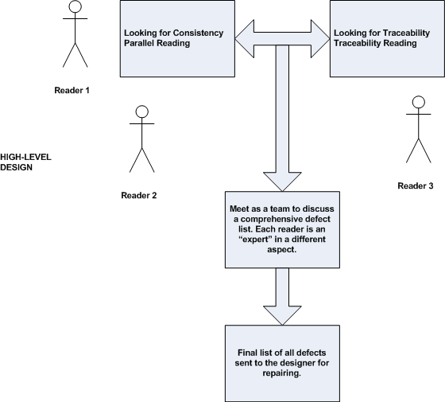

OUM |
Technique Overview |
||
Method Navigation |
Current Page Navigation |
||
|
|
||||||||
The purpose of this technique is to assist in providing techniques for peer (design) reviews. This technique was prepared by reviewing industry practices and references for object-oriented design peer reviews. This technique was written with the assumption that the reviewers understand UML models and can review them for consistency and traceability. This technique is not meant to describe the exact features of each model, you should refer to the OUM task for the corresponding model for details on how to prepare the model. The technique is meant to be used to conduct a peer (design) review, but can be applied anytime consistency and traceability across models is being examined.
Review Results - The Review Results documents the findings of a peer review of a collection of OUM work products.
No. |
Step | Component | Component Description |
|---|---|---|---|
Parallel Reading - Looking for Consistency across the models that have been prepared |
|||
1 |
Sequence x Class Diagrams | Review Results | Check to make sure that the class diagram for the system describes classes and their relationships in such a way that the behaviors specified in the sequence diagrams are correctly captured. The classes and objects specified in the sequence diagram should appear in the class diagram. Next, check that the class diagram describes relationships, behaviors, and conditions that capture the dynamic services as described on the sequence diagram. Read a sequence diagram to understand the system services described and how the system should implement those services. Identify and inspect the related class diagrams, to determine that the corresponding system objects are described accurately. |
2 |
State diagrams x Class Description | Review Results | Verify that the classes are defined in a way that can capture the functionality specified by the state diagrams. Read the state diagram to understand the possible states of the object and the actions that trigger transitions between them. Locate the class or class hierarchy, attributes, and behaviors on the class description that correspond to the concepts on the state diagram. Compare the class description to the state diagram to make sure that the class, as described, captures the appropriate functionality. |
3 |
Sequence x State Diagrams | Review Results | To verify that every state transition for an object can be achieved by the messages sent and received by that object. Read the state diagram to understand the possible states of the object and the actions that trigger transitions between them. Read the sequence diagrams to understand how the transition actions are achieved by messages that are sent and received by the relevant object. Make sure that all transition actions are accounted for. |
4 |
Class diagrams x Class Descriptions | Review Results | To verify that the detailed descriptions of classes contain all the information necessary according to the class diagram, and that the description of classes is clear and concise. Read the class diagram to understand the necessary properties of the classes in the system. Review the class descriptions for extraneous information. |
Apply Traceability Reading Techniques - Checking traceability from one artifact to another |
|||
5 |
Class Descriptions x Requirements Description | Review Results | Verify that the concepts and services that are described by the functional requirements are captured appropriately by the class descriptions. Read the requirements description to understand the functionality described. Compare the class descriptions to the requirements to verify if the requirements were captured appropriately. Review the class description and functional requirements to make sure that all appropriate concepts correspond between the documents. |
| 6 | Sequence Diagrams x Use Cases | Review Results | Validate that the sequence diagrams describe an appropriate combination of objects and messages that work to capture the functionality described by the use case. Identify the functionality described by a use case, and important concepts of the system that are necessary to achieve that functionality. Identify and inspect the related sequence diagrams, to validate the corresponding functionality is described accurately and whether behaviors and data are represented in the right order. Compare the diagrams to determine whether they represent the same domain concepts. |
| 7 | State Diagrams x Requirements Description and Use Cases | Review Results | Validate that the state diagrams describe appropriate states of objects and events that trigger state changes as described by the requirements and use cases. Read the state diagram to determine if the states described are consistent with the requirements and if the transitions are consistent with the requirements and use cases. |
In an OUM based project, some larger development efforts may require the use of more rigorous review and inspection techniques. A peer review is meant to ensure that software artifacts are complete, consistent, unambiguous, and contain as few details as possible to effectively support subsequent system development. Reviews are used to improve the quality of system design and code.
Reviews rely on people understanding, in order to detect potential defects. Reviews can be performed as soon as a work product is written and can be used with different types of artifacts and notations. OUM recommends that reviews require an individual to inspect a particular artifact and then meet as a team to discuss and record defects, which are then sent to the work product author to be revised.
When a review is done within a team, technical expertise about the quality of the software is shared among the team. For early adopter OUM projects that are being mentored by experienced individuals, this can be a powerful technique to ensure that the project team is developing consistent and complete work products. Developers become familiar with the idea of reading each other's work products and and this leads to improved quality of the work products being produced over time.
Reviews depend on human effort, and therefore, some non-technical issues may become a factor:
For these reasons it is important to have a structured approach to performing effective inspections.
During Inception, the Business Context Diagram and the business use cases may be developed. Review the two in parallel to ensure that actors described in the business use cases are also present on the Business Context Diagram, and business units described in the Business Context Diagram also have some context in the business Use Cases being described. If not, explain in the text of the models why this is not the case.
Also in Inception, prepare the System Use Case Model (RA.023). Review it against the System Context Diagram (RA.015) to make sure that the system actors are consistent, and the data flows into and out of the system are going to be consumed by one (or more) of the use cases on the System Use Case Diagram.
During Elaboration, prepare the System Use Case Details (RA.024) portion of the System Use Case Model. Review it against the Domain Model to ensure that any composite data groups “Customer Detail” are defined and therefore non-ambiguous. If not, the attributes should be specifically named in the step of the RA.024 where they are produced or consumed. If you are identifying candidate services for a SOA architecture, you should provide the traceability to these through a repository, or through the use of the Services Repository template (AN.085). For object-oriented analysis work, analyze the data (AN.050) and behavior (AN.060) using a class diagram. Then, develop the component diagrams (DS.050) to describe the detailed design for a software component of the system.
During Construction, prepare the component diagrams, and sequence diagrams that assist in understanding the design and interaction of the components of the system. These should each have traceability back to the package (and therefore, the use case) from which they originated. There will be designs for some of the less architecturally-significant use cases in Construction, but it is most likely that design work was completed at the end of Elaboration. Optionally, this information may have been prepared in a Design Specification (DS.140), and a review based on this technique may or may not apply depending on the nature of the project.
Work product reading techniques should be used to improve the effectiveness of inspections by providing procedural guidelines that can be used by individual reviewers to examine a given work product and identify defects. Reading techniques are meant to capture knowledge about best practices for defect detection in a procedure that can be followed. This technique describes reading techniques for the purpose of defect detection of high-level object-oriented design diagrams represented using Unified Modeling Language (UML).
Each reading technique can be thought of as a set of procedural guidelines that reviewers can follow, step-by-step, to examine a set of diagrams and detect defects. The types of defects on which the techniques are focused is listed in the following table:
Type of Defect |
Description |
|---|---|
Omission |
One or more design diagrams that should contain some concept from a requirement on the MoSCoW List (RD.045) or Supplemental Requirements (RD.055) do not contain a representation for that concept. |
Incorrect Fact |
A design diagram contains a misrepresentation of a concept described in a requirement on the MoSCoW List (RD.045) or Supplemental Requirements (RD.055). |
Inconsistency |
A representation of a concept in one design diagram disagrees with a representation of the same concept in either the same or another design diagram. |
Ambiguity |
A representation of a concept in the design is unclear, and could cause a user of the document (developer, low-level designer, etc.) to misinterpret or misunderstand the meaning of the concept. |
Extraneous Information |
The design includes information that, while true, does not apply to this domain and should not be included in the design. |
Applying these as an OUM technique, review each group of diagrams that could possibly be compared against each other. For example, use cases need to be compared to interaction diagrams (when interaction diagrams are done as part of the project) to detect weather the functionality described in the use case was captured and all the concepts and expected behaviors of this functionality were represented. The set of reading techniques is is illustrated in the diagram below. We differentiate parallel (comparisons of documents within a single iteration) from traceability (comparisons of documents between increments) reading.
While parallel reading is meant to identify whether all of the design artifacts are describing the same system, traceability reading attempts to verify whether those design artifacts represent the right system, which is described by the requirements and use cases. So, the goal is that when all the techniques are used together, the quality issues in the design are covered. If the development team is not using the full set of [OUM] UML design artifacts, then the corresponding review techniques need not be applied, without impact to the design review.
The parallel techniques should be performed before the traceability techniques, however, a subset or reordering of the techniques may be chosen based on important attributes of the design to be reviewed.

Reading Techniques
The main idea in applying traceabiltiy reading is to understand whether all the high-level design artifacts are representing the same system. Keep in mind, that the artifacts should model the same system information but from different perspectives. UML organizes the artifacts and different types of information based on the type of system information they contain.

Organizing Reading with Three Readers
The following templates and tools are available to assist with this technique:
Template File Name |
Comments |
|---|---|
| MS WORD |
This technique is recommended for use in the following OUM tasks:
| Task | Usage |
|---|---|
| Use this technique to validate UML models, if they are part of your project. |
Use the following criteria to check the quality of this technique:

Copyright © 2006, 2016, Oracle and/or its affiliates. All rights reserved.